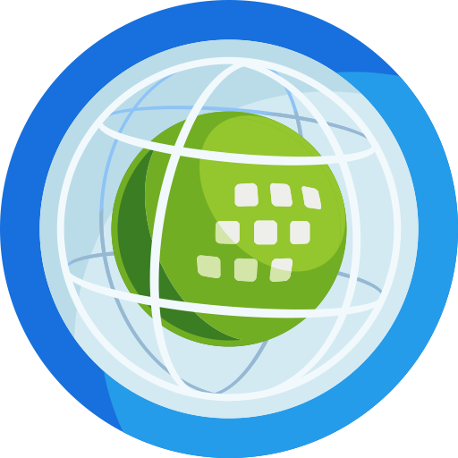

Collect EarthVerifiable land use change data for forest and climate reporting
Collect Earth is a free, open-source tool for assessing land use and land cover on satellite imagery, alone on your computer or as a whole team. You decide where the data lives, who sees it and where it goes next.
What it is for
Interpreters look at high and very high resolution imagery from Google Earth Web, ESRI Wayback, Earth Map, Google Earth Engine and Planet (with your own key), and answer a survey for each plot. It is fast to learn, cheap to run, and adapts to your methodology.
- Multi-phase national forest inventories
- Land use, land-use change and forestry (LULUCF) assessments
- Deforestation, reforestation and desertification
- Monitoring agricultural land and urban areas
- Validating existing maps
- Spatially explicit socio-economic data
Your data, under your control
Collect Earth is built so that the people who collect the data decide where it lives, who sees it and where it goes next. Nothing is locked in: you can take everything out, at any time, in open formats.
Saved on your own computer first
Every answer is saved at once in a database on the interpreter's computer, before it goes anywhere else, and Collect Earth keeps the last ten backups.
You choose where it goes
Keep it on one computer, in your office's own database, in a private project on FAO's free Collect Earth Cloud, or on a server you run. Start one way and move later.
Private projects, invited people only
A cloud project is seen only by its members. People join through invitation links you make, limited in uses and time; you can stop a link or remove someone at any moment. Others on the server cannot even tell the project exists.
Each role sees only what it needs
Collectors see only their own work, reviewers see no figures per person, coordinators see everything. Funders can follow progress through a read-only link that shows no names.
Take it all out, any time
Download every answer as CSV, GeoJSON, KML or shapefile, with or without the coordinates, or as a Collect Earth backup that opens on a computer or on another server. When the work is over, delete the project from the server.
Open source, down to the server
The code is open under the MIT licence. Run your own Collect Earth Cloud for about 10 to 15 US$ a month, and nobody else, including FAO, can see the data.
→ Where the data lives in each set-up, and what else leaves the computer
How it works
Every set-up uses the same desktop program and the same project file. Unless the team shares one PostgreSQL database, each plot is saved on the interpreter's own computer first.
Open the project
A .cep project file holds the survey, its form, the plots and the settings. The plots come from a sampling design, such as the global SIGRID grid. Open it in Collect Earth, or join a cloud project with an invitation link.
Assess each plot
By default Collect Earth opens inside Google Earth Web, with the plot list and the form in a panel beside the imagery. Look at the plot and answer the questions. Every answer is saved at once; press Submit when the plot is done and the next one opens.
Follow and use the results
Follow progress on a dashboard, check quality, and export to CSV, Open Foris Collect, KML or a LULUCF reporting package.

Four ways to work
The same desktop program and the same project file work in four set-ups. All of them need an internet connection while interpreters work, because the imagery comes from Google Earth and the other imagery services. They differ in where the data lives, how the plots are brought together, and how much a coordinator can see while the work goes on. Answer two or three questions to find yours.
Who will assess the plots?
How should the team's work come together?
For a few interpreters the simplest is often the local database: each person works in Collect Earth on their own computer, and one person, the administrator, brings everyone's plots together. No server and no accounts.
Where may the team's data be kept?
For example, national rules may say where survey data can be kept.
Does everyone work in one office, on one network, with IT support?
Your set-up
1. One interpreter, on your computer
Open the project file and assess the plots. Your progress is on My dashboard, and you can move to a cloud project later.
Your data: in a database on your computer, and nowhere else unless you export it.
Your set-up
2. A small team on the local database, with an administrator
Each interpreter works in Collect Earth's own database on their computer. One person acts as the administrator: they give out the plot files, receive everyone's exports and bring them together into one database, where they follow progress, check the data and export the results. Simple and free: no server, no accounts, nothing to install beyond Collect Earth.
Your data: on the team's computers, and the complete set with the administrator. It travels only as the export files you choose to send.
Your set-up
2. A team sharing one office database
Your IT sets up PostgreSQL on the office network, and every computer saves straight into it. No exports to carry, but each plot must go to one person only.
Your data: in one database on your office network, run by your IT.
Your set-up
3. Collect Earth Cloud
Nothing to install beyond Collect Earth. The coordinator invites the team with a link and follows progress, quality checks, training and the time spent per plot on a web dashboard.
Your data: on each interpreter's computer first, then in your private project on FAO's free server. Only the people you invite see it, and you can download or delete it at any time.
Your set-up
4. Your own server
Everything set-up 3 offers, on a Collect Earth Cloud your organisation runs: on Google Cloud in about 20 minutes, or on any Docker host.
Your data: on your team's computers and your own server only. Nobody else, including FAO, can see it.
- Working alone? Set-up 1.
- A small team? Set-up 2: each person works in Collect Earth's local database, and one administrator brings everyone's plots together. No server needed.
- A team that wants the web dashboard, and FAO's free server is fine? Set-up 3, Collect Earth Cloud.
- A team whose data must stay on its own server? Set-up 4, your own server.
One interpreter, local
A study, a pilot, one expert. Everything stays in a database on your computer, with your own progress dashboard.
Data lives: on your computer
→ The workflowA small team, no server
Each interpreter works in Collect Earth's local database, and one person, the administrator, brings everyone's plots together. Or the office shares one PostgreSQL database.
Data lives: on your team's computers, or your office database
→ The workflowCollect Earth Cloud
Plots are sent within about 30 seconds to the free server run by FAO. The coordinator follows the work in a web dashboard.
Data lives: on each computer, and in your private project on FAO's server
→ The workflowYour own server
The same as set-up 3, on a server you run. The data never leaves your organisation.
Data lives: on your computers and your own server only
→ The workflow| 1. One interpreter | 2. Team, local | 3. Collect Earth Cloud | 4. Private server | |
|---|---|---|---|---|
| Where the data lives | Your computer | Each computer, or your office's PostgreSQL | Each computer, and your private project on FAO's server | Each computer, and your own server |
| Who can see it | You | Whoever you give the files or database access to | The people you invite, by role | The people you invite, by role |
| Who runs the server | Nobody | Nobody (or your IT, for PostgreSQL) | FAO, for free | You |
| Internet connection | Always, for the imagery | Always, for the imagery | Always: the imagery, and sending plots to FAO's server | Always: the imagery, and sending plots to your server |
| Plots reach the coordinator | Already there | The administrator imports each person's exports | Automatically | Automatically |
| Giving out plots | Not needed | One plot file per person, by hand | In the dashboard, whole files or divided automatically | As in set-up 3 |
| Progress dashboard | Your own | Each computer's own | Web dashboard for the team | Web dashboard for the team |
| Quality checks, training, time spent | Self-checks on My dashboard | By hand | Built in | Built in |
| Cost | Free | Free | Free | About 10 to 15 US$ a month on Google Cloud |
Collect Earth Cloud
A web dashboard for coordinators. Nobody installs a server: interpreters click an invitation link, choose Join cloud project… in Collect Earth, and every plot they save reaches the dashboard by itself. On cloud.collectearth.org the administrators create the projects: ask FAO for one.
Your project stays private: only the people you invite see it, each according to their role, and the coordinators can download everything, or delete the project, at any time.
- Progress per day and per person, with a forecast against your deadline
- Plots given out as whole files, divided evenly, or by a column such as province
- Blind quality checks: some plots go to a second person, and the dashboard measures agreement per question and per person
- Training: calibration and learning sets with scores, kept apart from the real data
- Reference plots: plots with known answers, given to every collector, that their work is measured against
- Time spent on each plot, with very quick plots flagged for a second look
- Downloads: every answer with the coordinator's decisions, as CSV, GeoJSON, KML or shapefile, and a Collect Earth backup
- Start from a Collect Earth backup: a new project with the survey and the plots already assessed on the desktop
- Import from Collect Earth Online: bring in a CEO project's questions, plots and shapes


Run your own server
Organisations that must keep their data in-house can run their own copy of Collect Earth Cloud. Coordinators and interpreters work exactly as on the shared server; nobody else, including FAO, can see the data.
On Google Cloud, guided
- Open the Open in Cloud Shell button in the self-hosting guide.
- Pick a Google Cloud project with billing on.
- Run
bash deploy/gcp/deploy.shand wait about 20 minutes.
About 10 to 15 US$ a month, with nightly backups. Any Docker host with PostgreSQL works too: see DEPLOY.md.
Guides
Step by step, with screenshots, for the current version of Collect Earth.
Which set-up?
Alone or as a team, on your own computers or on a server: pick the way of working that suits your project.
Designing the sample
Where the plots go: SIGRID, the Grid Generator on Google Earth Engine, or the dashboard's own design.
Collect Earth for interpreters
Install, open a project, assess plots and send them, alone or in a cloud project.
Running a cloud project
For coordinators: set up the project, invite the team, give out plots, check quality, download the data.
Your own server
Install a private Collect Earth Cloud on Google Cloud or any Docker host.
Start collecting
Collect Earth runs on Windows, macOS and Linux. It is free and open source under the MIT licence.